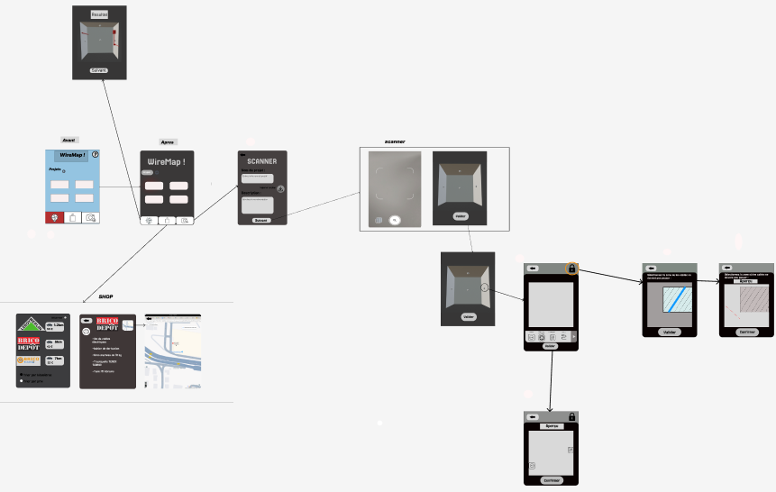
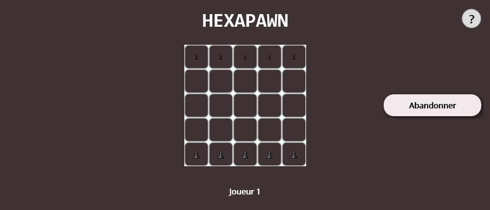
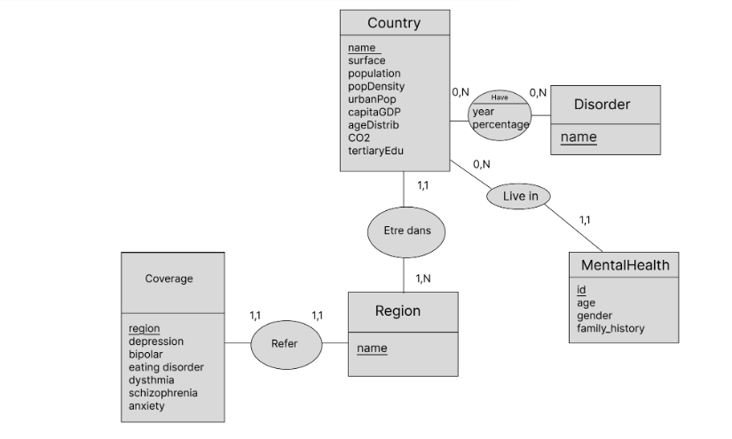

Dans cette page, je vais vous parler de différents projets que j'ai réalisés pendant mon BUT Informatique qui m'ont permis de travailler différentes compétences qu'on y apprend: C1-Développer des applications informatiques simples, C2- Appréhender et construire des algorithmes, C3-Installer et configurer un poste de travail, C4-Concevoir et mettre en place une base de données à partir d'un cahier des charges client, C5- Identifier les besoins métiers des clients et des utilisateurs, et C6-Identifier ses aptitudes pour travailler dans une équipe.

Intitulé: SAE de recueil de besoin
Contexte: Nous étions une équipe de 4 et devions rendre le projet en 2 mois
Objectif: Chaque groupe avait un enseignant attitré qui avait un besoin. Nous avions droit à deux
réunions pour communiquer avec le professeur, comprendre son besoin et lui permettre de vérifier si l'avancement du projet correspond à ses attentes. Nous devions lui rendre la maquette d'une application mobile qui répondrait à ses besoins.
Travail réalisé: Nous avons commencé par préparer les questions afin de mieux cerner son besoin. Celui-ci était une application lui permettant de mieux savoir où faire passer les câbles électriques dans les murs pour minimiser le coût en fonction de ce qu'il comptait installer. Cette application devait aussi lui indiquer quel
magasin pourrait lui permettre d'acheter le matériel au moindre coût. Nous nous sommes ensuite organisés avec chacun différentes tâches pour arriver à répondre au mieux à son besoin dans le temps imparti. Cette SAE nous a fait travailler les compétences C5 et C6.
Résultat: Au final, nous avons eu une note de 13,5, alors que la moyenne était de 11,5

Intitulé: SAE de développement d'application IHM
Contexte: Nous étions une équipe de trois et devions rendre le projet en trois mois.
Objectif: Les professeurs nous avaient présenté différents jeux. Nous devions en choisir un et le développer.
Travail réalisé: Nous avions plusieurs jalons à respecter : rendre les spécifications de l'application, développer une application en console, remettre la documentation, livrer l'application finale, réaliser une présentation orale et fournir une vidéo de présentation. Malgré une certaine procrastination de la part de mes coéquipiers, j'ai réussi à les motiver pour travailler et nous avons finalement rendu une application fonctionnelle aux enseignants. Cette SAE nous a permis de travailler les compétences C1, C2, C5 et C6.
Résultat: Nous avons rendu une application contenant toutes les fonctionnalités demandées.

Intitulé: Exploitation d'une base de données
Contexte: Nous étions une équipe de 4 et devions rendre le projet en 3 mois
Objectif: Les professeurs nous avaient demandé de chercher un ou plusieurs jeu de données de notre choix, d'en faire des base de données et d'analyser ces données.
Travail réalisé: Nous avions d'abord recherché un jeu de donnée susceptible de nous intéresser pour l'analyse, nous avons choisi des données pour chercher des causes de problèmes de santé mentales. Nous avons ensuite réalisé des bases de données, chargé ces données grâce à des scripts python, nous en avons traité certaines, fait des graphiques et nous les avons analysés. Ce travail a demandé les compétences C2, C4 et C6.
Résultat: Au final, lors de l'oral que nous avions dû faire en anglais avec le professeur et il nous a dit que nous avions rendu un travail très qualitatif.
Intitulé: SAE de 2eme année
Contexte: Nous étions une équipe de six et devions rendre le projet en huit mois.
Objectif: Le club d'anglais universitaire avait besoin d'une solution informatique pour aider les enseignants à le gérer et permettre aux étudiants de réserver des créneaux.
Travail réalisé: Nous avons d'abord organisé des réunions régulières avec notre cliente afin de recueillir ses besoins et de la tenir informée de notre avancement.
Nous avons développé un site web en PHP. Nous avons connecté ce site à une API. Nous avons également réalisé un panneau d'administration en Blazor ainsi qu'une application mobile en Kotlin, tous deux reliés à l'API.
Au cours de cette SAE, j'ai non seulement appris à développer une solution informatique complète et concrète, mais aussi à gérer une équipe. En effet, à la suite de problèmes internes, j'ai dû apporter mon aide à un camarade, puis on m'a confié le rôle de coordinateur du groupe. Cette SAE nous a permis de travailler sur l'ensemble des compétences.
Résultat: Nous avons rendu une application fonctionnelle répondant aux besoins de notre enseignante.